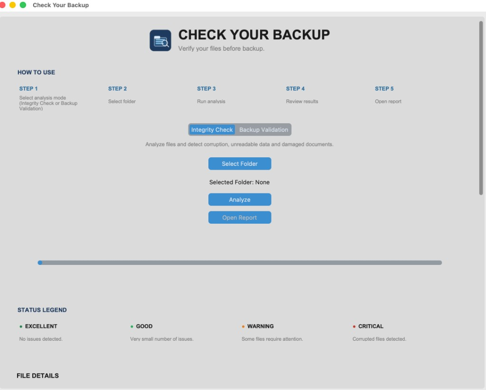
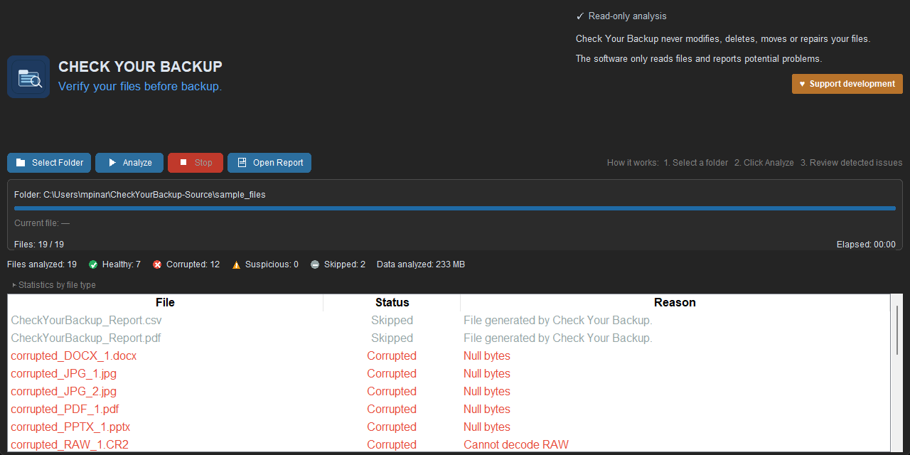
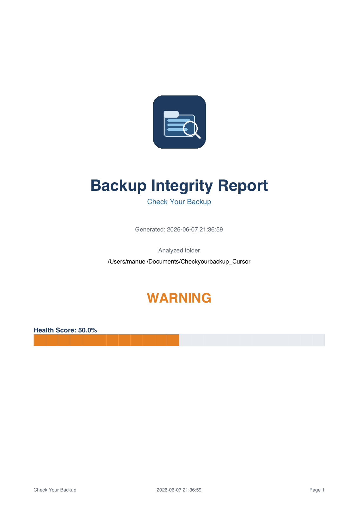

Detect damaged photos
Open JPG, TIFF and PNG files read-only and flag images that cannot be decoded or displayed correctly.
Detect corrupted JPG, TIFF, PNG and RAW image files before archiving them to a NAS, external drive or cloud backup. Check Your Backup scans your photo library read-only. A backup of a corrupted file is still a corrupted file.
12,847 photos scanned · 3 need attention
Thousands of images, multiple backup disks, NAS storage and cloud copies. Verify the files themselves, not just the backup job.
Open JPG, TIFF and PNG files read-only and flag images that cannot be decoded or displayed correctly.
Validate professional RAW collections (NEF, CR2, ARW, DNG) before long-term storage or migration.
Your originals are never deleted, modified, repaired or moved. Analysis is inspection only.
PDF and CSV reports document the state of your photo library, ideal for clients, studios and archives.
Point at a photo library, NAS mount or backup copy and scan every supported file recursively.
Download, double-click, run. No Python, no admin rights. Everything stays on your computer.
Also supports ZIP, PDF and common Office documents, secondary to photo and RAW verification.
Photographers and anyone managing large image collections who need proof their archives are actually recoverable.
Trust is essential when scanning irreplaceable photo archives.
All analysis runs locally on your computer. Nothing is uploaded to the cloud.
Designed for real-world photographer workflows and image archives.
Also supports ZIP, PDF and common Office documents.
Three steps to verify a photo library or RAW archive.
Choose a photo library, RAW collection, NAS mount or backup disk to verify.
Each image and RAW file is opened read-only. Corrupted or unreadable files are flagged.
Inspect per-file results and save a PDF/CSV report documenting your archive state.
A focused desktop app for photo libraries, RAW collections and image archives.


Every supported image in your folder gets a clear, objective status.
Scan a photo library or RAW archive and classify every supported file:
Results show objective counts only. No scores or ratings.
Document the state of a photo collection with professional, shareable reports.

Why I built a tool that actually opens your files.
For many years I have worked with large photographic archives, ranging from 4×5 large-format film transparencies to modern high-resolution digital photography. Throughout my career, I have managed hundreds of thousands of image files across multiple storage systems and backup devices.
Like many professionals, I followed the well-known 3-2-1 backup strategy. I believed my data was safe because I always maintained multiple backups of my projects.
Then one day I needed to recover an old file.
To my surprise, the file was corrupted. It could not be opened, repaired, or recovered. At first, I was not worried. I assumed I could simply restore it from one of my backups.
Unfortunately, I discovered something much worse.
The corruption had silently propagated from backup to backup over the years. Every backup contained the same damaged file. The original problem had been copied repeatedly until every available copy was unusable.
The file still looked perfectly normal. It had the correct name, the expected file size, and occupied hundreds of megabytes of storage. Some damaged files were over 1 GB in size. Yet when opened, they contained no usable data at all.
Most backup systems verify that files exist and can be copied. They generally do not open every file and verify that its contents are actually valid and readable. A backup can successfully complete while still containing corrupted, empty, damaged, or unreadable files.
That realization led me to create Check Your Backup. Instead of simply checking whether files exist, it automatically opens and validates files whenever possible, helping identify corrupted files before they become permanent data loss.
My recommendation is simple:
Check Your Backup is developed and maintained independently.
If this software helped you protect your files and backups, consider supporting future development with a small contribution.
Support Development (€5) Choose your own amountFree · Portable · Runs locally.
The builds are not code-signed yet, so your system shows a one-time security prompt. This is normal for free, unsigned apps and does not mean anything is wrong. Here's how to open it.
Backups copy what you already have. If a photo or RAW file is already corrupted, every backup of that file remains corrupted. Check Your Backup opens image files read-only and flags damage before you archive to NAS, external drives or cloud storage.
Yes. Most backup tools verify that files exist and can be copied. They do not open each photo to confirm it is readable. A corrupted JPG or RAW file can look normal by name and size while containing no usable image data.
No. Check Your Backup never deletes, modifies, repairs or moves your files. It only reads files, checks integrity and generates reports.
Check Your Backup verifies common photographer RAW formats including NEF, CR2, ARW and DNG, along with JPG, JPEG, TIFF, TIF and PNG. Each file is opened read-only to confirm it is not corrupted, truncated or unreadable.
Most backup tools verify that files exist and can be copied successfully. They typically do not open each image and validate that its contents are readable. A backup job can finish without errors even when photos are corrupted, empty or damaged, because the copy itself succeeded. Check Your Backup complements your backup software by actually opening and validating image file contents.
Synology Hyper Backup focuses on copying and versioning your data. It does not generally open files to verify their internal integrity. A damaged RAW or JPG file can be backed up successfully and still look normal by name and size. Check Your Backup works alongside tools like Hyper Backup by opening files read-only and flagging those that contain no usable data.
No. All analysis runs locally on your computer. Nothing is sent to the internet.
Windows 10/11 and macOS (Intel and Apple Silicon). Builds are portable, with no Python or admin rights required.
The file opened but showed warning signs (for example, a truncated RAW). It may still be partially usable, but you should double-check it.
Yes, as a secondary capability. The app also supports ZIP, PDF and common Office documents, but the primary focus is photo and RAW integrity verification for photographers and archives.
Code signing/notarization is optional for the initial release. You can still run it by allowing it on first launch. See the download note above.
Learn how to detect corrupted photos, verify NAS backups and protect long-term photo archives.
Step-by-step verification before NAS, cloud or disk backup.
Read article →Verify NEF, CR2, ARW and DNG files before archiving your photography.
Read article →Understanding silent data corruption in photos and archives.
Read article →Why a successful backup job does not guarantee healthy image files.
Read article →The personal story behind Check Your Backup.
Read article →Guides, blog articles, project background and version history.
Backup integrity, corrupted files, NAS verification and photo archive protection.
Read the blog →Run an integrity check step by step and read your per-file results and reports.
Read the guide →What Check Your Backup is, who it's for, and exactly what it checks.
Learn more →Release notes and changes for every version of the app.
View changelog →Stay updated with software improvements, backup safety tips, file integrity checks and new releases.
Detect corrupted photos before backup, understand bit rot and verify NAS photo archives.
Follow on InstagramQuestions, feedback or a corrupted file that slipped through? I'd love to hear from you.